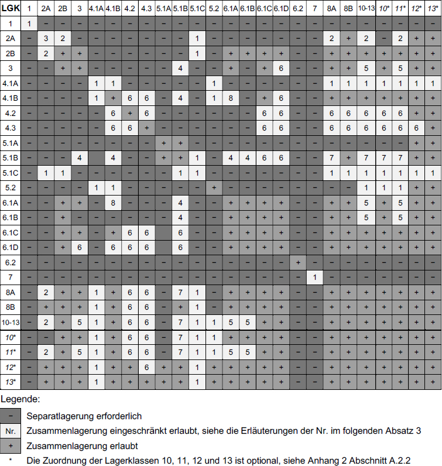

13 Zusammenlagerung, Getrenntlagerung und Separatlagerung
13.1 Anwendungsbereich
(1) Die Anforderungen dieses Abschnitts 13 gelten für die Lagerung unterschiedlicher Gefahrstoffe, wenn Lagerung im Lager gemäß Abschnitt 5 erforderlich ist.
(2) Abweichend von Absatz 1 brauchen die Maßnahmen dieses Abschnitts bei einer Gesamtmenge aller Gefahrstoffe von bis zu 200 kg nicht ergriffen zu werden.
(3) Abweichend von Absatz 1 gelten für Gefahrstoffe mit spezifischen gesetzlichen Lagervorschriften ggf. andere Regelungen oder niedrigere Mengen gemäß den in Abschnitt 13.3 Tabelle 12 Erläuterung 1 genannten Vorschriften.
13.2 Allgemeine Grundsätze
(1) Gefahrstoffe/Lagergüter dürfen nur zusammengelagert werden, wenn hierdurch keine Gefährdungserhöhung entsteht.
(2) Absatz 1 gilt als erfüllt, wenn die Gefahrstoffe/Lagergüter gleichartige Gefahreneigenschaften aufweisen und gleichartige Sicherheitsmaßnahmen erfordern.
(3) Hinweise für eine mögliche Gefährdungserhöhung gemäß Absatz 1 können sich z. B. ergeben aus
- den Gefahrenhinweisen (H-Sätze), ergänzenden Gefahrenhinweisen (EUH-Sätze) und Sicherheitshinweisen (P-Sätze) der Kennzeichnung – dies gilt insbesondere für EUH014 "Reagiert heftig mit Wasser", EUH029 "Entwickelt bei Berührung mit Wasser giftige Gase", EUH031 "Entwickelt bei Berührung mit Säure giftige Gase", EUH032 "Entwickelt bei Berührung mit Säure sehr giftige Gase", P220 "Von Kleidung und anderen brennbaren Materialien fernhalten", P223 "Keinen Kontakt mit Wasser zulassen" und P420 "Getrennt aufbewahren" – und
- den produktspezifischen Sicherheitsinformationen, wie
- den Sicherheitsdatenblättern (Abschnitt 5 "Maßnahmen zur Brandbekämpfung" und Abschnitt 7 "Handhabung und Lagerung"; erfahrungsgemäß weniger detailliert sind die Angaben im Abschnitt 10 "Stabilität und Reaktivität") oder
- den Merkblättern der Unfallversicherungsträger (Beispiel: Cyanide sollen nicht mit Gefahrstoffen, wie z. B. Säuren, zusammengelagert werden, mit denen sie Cyanwasserstoff entwickeln können),
- den produktspezifischen Gefährdungen, wie z. B. Gefährdung durch Zündquellen aufgrund eines Kurzschlusses in Zusammenhang mit Lithiumbatterien.
(4) Ergeben die Informationen gemäß Absatz 2 oder 3, dass Gefahrstoffe/Lagergüter z. B.
- unterschiedliche Löschmittel benötigen,
- unterschiedliche Temperaturbedingungen erfordern,
- miteinander unter Bildung entzündbarer oder giftiger Gase reagieren oder
- miteinander unter Entstehung eines Brandes reagieren,
dürfen diese nicht zusammengelagert werden.
(5) Zur Reduzierung von Gefährdungen kann eine Getrenntlagerung innerhalb eines Lagerabschnittes oder eine Separatlagerung erforderlich sein:
- Eine Getrenntlagerung wird erreicht durch ausreichende Abstände oder durch Barrieren (z. B. durch Wände, Schränke aus nicht brennbarem Material, Produkte aus nicht brennbaren Stoffen der LGK 12 oder 13) oder durch Lagerung in getrennten Rückhalteeinrichtungen.
- Separatlagerung ist eine Getrenntlagerung in unterschiedlichen Lagerabschnitten mit einer Feuerwiderstandsdauer von mindestens 90 min.
13.3 Zusammenlagerungstabelle
(1) Zur Festlegung der Zusammenlagerungsmöglichkeiten können den Gefahrstoffen/Lagergütern Lagerklassen (LGK) zugeordnet werden. Die Zuordnung der Lagerklasse hat gemäß dem in Anhang 2 beschriebenen Verfahren zu erfolgen. Falls der Lieferant eine Lagerklassenzuordnung vorgenommen hat, können diese dem Sicherheitsdatenblatt Unterabschnitt 7.2 oder Abschnitt 15 entnommen werden.
(2) In der Zusammenlagerungstabelle (Tabelle 12) wird für jede Lagerklassenkombination angezeigt, ob
- eine Zusammenlagerung erlaubt ist (+ und grün),
- eine Separatlagerung erforderlich ist (- und rot) oder
- Einschränkungen zu beachten sind, wie z. B. Getrenntlagerung (Nr. und gelb).
Tabelle 12: Zusammenlagerungstabelle (einschließlich Gefahrstoffe/Lagergüter, die nicht im Anwendungsbereich dieser TRGS sind, z. B. LGK 1, LGK 6.2, LGK 7). Die in vorhergehenden Versionen dieser TRGS in der Tabelle enthaltenen Bezeichnungen der Lagerklassen wurden gestrichen. Die korrekte Zuordnung der Lagerklassen ist nur basierend auf dem Fließschema gemäß Anhang 2 möglich.

(3) Erläuterungen der Nummern in Tabelle 12; sie gelten jeweils nur für die Kombinationen, die in Tabelle 12 mit der entsprechenden Nummer gekennzeichnet sind:
- Erläuterung der Nr. 1 in Tabelle 12:
Für Gefahrstoffe der folgenden Lagerklassen sind die spezifischen gesetzlichen Vorschriften mit darin enthaltenen Anforderungen an die Zusammenlagerung zu beachten:
- LGK 1 und LGK 4.1A: 2. SprengV;
- LGK 5.1C: GefStoffV Anhang I Nummer 5 sowie TRGS 511;
- LGK 5.2: DGUV Vorschrift 13; Hinweis: Die hier genannten Regelungen für die Zusammenlagerung können grundsätzlich auch für selbstzersetzliche Gefahrstoffe angewendet werden soweit dies ohne Zuordnung zu einer Gefahrgruppe möglich ist;
- LGK 7: AtG, StrlSchG und StrlSchV.
- Erläuterung der Nr. 2 in Tabelle 12:
Getrenntlagerung in Räumen (statt Separatlagerung) ist zulässig, wenn
- maximal 50 gefüllte Druckgasbehälter gelagert werden, darunter nicht mehr als 25 Druckgasbehälter mit akut toxischen Gasen, Kat. 3, H331 oder Kat. 4, H332 (nicht aber Kat. 1 oder Kat. 2, H330), entzündbaren Gasen oder oxidierenden Gasen und
- die Druckgasbehälter durch eine mindestens 2 m hohe Wand aus nichtbrennbaren Baustoffen abgetrennt sind und zwischen Wand und den anderen brennbaren Lagergütern ein Abstand von mindestens 5 m eingehalten wird.
- Erläuterung der Nr. 3 in Tabelle 12:
Mit verschiedenen Gasen gefüllte Druckgasbehälter dürfen unter folgenden Bedingungen gemeinsam in einem Lagerraum gelagert werden:
- Druckgasbehälter mit entzündbaren Gasen, oxidierenden Gasen und akut toxischen Gasen, Kat. 3, H331, wenn dabei die Gesamtzahl 150 Druckgasbehälter oder 15 Druckfässer nicht übersteigt. Zusätzlich dürfen Druckgasbehälter mit inerten Gasen in beliebiger Menge gelagert werden.
- Druckgasbehälter mit entzündbaren Gasen und Druckgasbehälter mit inerten Gasen in beliebiger Menge.
- Druckgasbehälter mit oxidierenden Gasen und Druckgasbehälter mit inerten Gasen in beliebiger Menge.
- Druckgasbehälter mit akut toxischen Gefahrstoffen und Druckgasbehälter mit inerten Gasen in beliebiger Menge.
- In den Fällen a) bis c) dürfen zusätzlich 15 Druckgasbehälter oder ein Druckfass mit akut toxischen Gasen, Kat. 1 und 2, H330 gelagert werden. Größere Mengen von Druckgasbehältern mit akut toxischen Gasen sind separat zu lagern.
- Zwischen Druckgasbehältern mit entzündbaren Gasen und Druckgasbehältern mit oxidierenden Gasen muss ein Abstand von mindestens 2 m eingehalten werden.
Für die Lagerung im Freien bestehen keine Einschränkungen.
- Erläuterung der Nr. 4 in Tabelle 12:
Zusammenlagerung darf unter den Bedingungen nach Tabelle 13 erfolgen.
Tabelle 13: Zusammenlagerung von Lagerklassenkombinationen mit Nr. 4
| Gesamtmenge
| Bedingung
|
| bis 1 t
| Keine Einschränkungen
|
| bis 20 t
| In Gebäuden ist:
- eine automatische Feuerlöschanlage vorhanden oder
- eine automatische Brandmeldeanlage in Verbindung mit einer nicht automatischen Feuerlöschanlage und eine anerkannte Werkfeuerwehr.
|
- Erläuterung von Nr. 5 in Tabelle 12:
Im selben Lagerabschnitt dürfen Materialien, die ihrer Art und Menge nach geeignet sind, zur Entstehung oder schnellen Ausbreitung von Bränden beizutragen, wie z. B. Papier, Textilien, Holz, Holzwolle, Kartonagen, Folien oder brennbare Verpackungsfüllstoffe, nicht gelagert werden, sofern sie nicht für Lagerung und Transport eine Einheit mit den ortsbeweglichen Behältern bilden.
- Erläuterung der Nr. 6 in Tabelle 12:
Die Gefahrstoffe dürfen mit Gefahrstoffen anderer Lagerklassen, denen in Tabelle 12 die Nr. 6 zugeordnet ist und mit anderen Materialien nur zusammen gelagert werden, wenn dadurch eine wesentliche Gefährdungserhöhung nicht eintreten kann. Eine wesentliche Gefährdungserhöhung kann durch eine Getrenntlagerung vermieden werden.
- Erläuterung der Nr. 7 in Tabelle 12:
Zusammenlagerung mit brennbaren Lagergütern darf unter den Bedingungen nach Tabelle 13 und Erläuterung Nr. 5 erfolgen.
- Erläuterung von Nr. 8 in Tabelle 12:
Zusammenlagerung darf unter den Bedingungen nach Tabelle 14 erfolgen.
Tabelle 14: Zusammenlagerung von Lagerklassenkombinationen mit Nr. 8
| Gesamtmenge
| Bedingung
|
| bis 10 t
| Keine Einschränkungen
|
| bis 20 t
| In Gebäuden ist eine automatische Brandmeldeanlage vorhanden.
Im Freien ist:
- eine automatische Brandmeldeanlage vorhanden oder
- Branderkennung und Brandmeldung durch stündliche Kontrollen mit Meldemöglichkeiten (wie z. B. Telefon, Feuermelder, Funkgerät) gewährleistet.
|
| bis 50 t
|
- Eine automatische Brandmeldeanlage ist vorhanden und
- die Feuerwehr erreicht die Brandstelle innerhalb von zehn Minuten nach Alarmierung.
|
| bis 100 t
|
- Eine automatische Feuerlöschanlage ist vorhanden oder
- eine automatische Brandmeldeanlage in Verbindung mit einer nicht automatischen Feuerlöschanlage und einer anerkannten Werkfeuerwehr.
|
13.4 Spezifische und abweichende Regelungen
(1) Abweichungen von den Zusammenlagerungsregeln sind zulässig, wenn
- nicht mehr als 400 kg Gefahrstoffe gelagert werden, davon höchstens 200 kg je Lagerklasse,
- Gefahrstoffe in Mengen bis zu 200 kg in ein Lager für die Lagerklassen 6.1C, 6.1D, 8A, 8B und 10 bis 13 hinzugelagert werden und
- keine Gefährdungserhöhung zu befürchten ist.
(2) Perchlorate und Chlorate sollen separat von brennbaren Stoffen gelagert werden, selbst wenn sie Lagerklasse 5.1B (und nicht 5.1A) zugeordnet sind, da bei Mischungen von Perchloraten oder Chloraten mit brennbaren Gefahrstoffen und anderen brennbaren Materialien eine deutliche Gefährdungserhöhung durch starke Wärmebildung bis hin zu explosionsartigen Reaktionen gegeben ist.
(3) Im Einzelfall kann aufgrund geeigneter Brandschutzkonzepte oder der Ergebnisse von Gefährdungsbeurteilungen von den Regelungen dieses Abschnitts 13 abgewichen werden.
(4) Ausnahmen von den Zusammenlagerungsregeln sind zulässig bei der Lagerung von Gefahrstoffen/Lagergütern in gefahrgutrechtlich zugelassenen Eisenbahnkesselwagen oder Tankcontainern auf abgeschlossenen Werksgeländen, wenn
- hierdurch keine Gefährdungserhöhung entsteht,
- die Lagerdauer drei Monate nicht überschreitet,
- die Transportbehälter in dieser Zeit nicht geöffnet werden; eine kurzfristige Öffnung ausschließlich zum Zwecke der Probenahme darf unter Berücksichtigung der bei dieser Tätigkeit erforderlichen Schutzmaßnahmen erfolgen, und
- die Transportbehälter regelmäßig, mindestens täglich, auf ordnungsgemäßen Zustand überprüft werden.
(5) Die Zusammenlagerungsverbote gelten nicht, wenn sich verpackte Gefahrstoffe/Lagergüter unter Beachtung der Vorschriften zur Zusammenladung nach Gefahrgutrecht in geschlossenen Frachtcontainern, z. B. auf Containerplätzen oder -terminals für die Beförderung befinden und die geschlossenen Frachtcontainer nicht übereinander oder unmittelbar nebeneinanderstehen. Diese Forderung ist erfüllt bei einem Mindestabstand von 0,5 m in jede Richtung.
(6) Die Zusammenlagerungsverbote gemäß Tabelle 12 gelten bei der Bereitstellung zur Beförderung auf den ausgewiesenen Bereitstellungsflächen nicht, selbst wenn die Bereitstellung zur Beförderung über 24 Stunden hinausgeht und daher gemäß Abschnitt 1 Absatz 2 als Lagerung gilt.